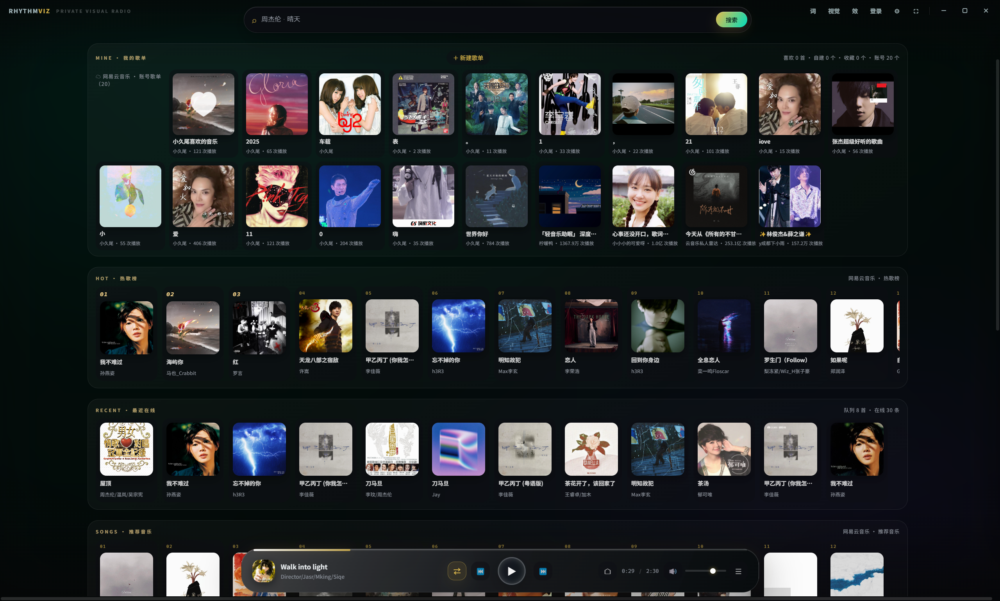
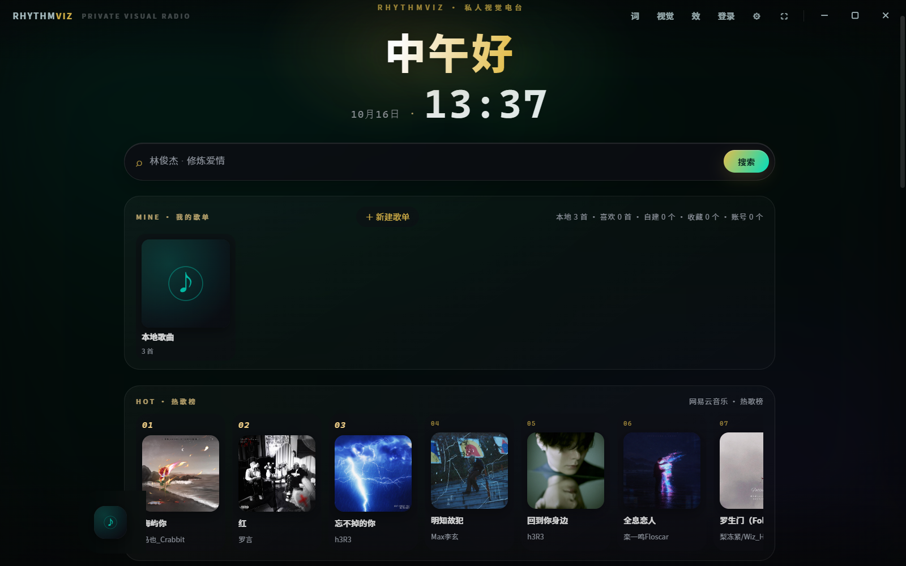
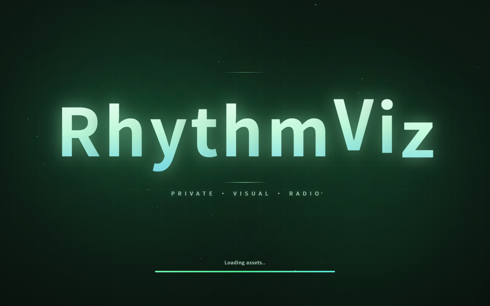
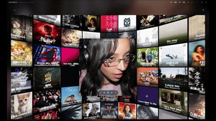
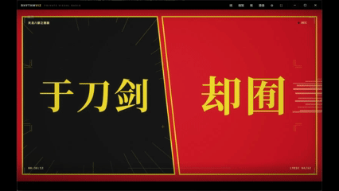
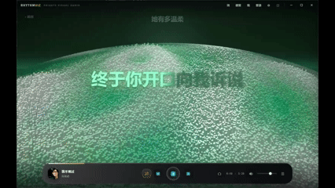
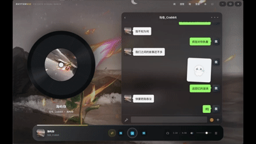
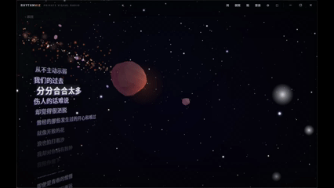

音乐有形，
律动可见。
聚合搜索、双源歌单与沉浸式视觉动效，安静地收进同一个播放器。
双音源 · 扫码登录 · 歌单同步 · 银河视觉
2 大音源QQ 音乐 · 网易云 聚合搜索
¥0免费使用 · 无广告 · 无内购
1 键登录官方扫码 · 歌单自动同步
N 种视觉银河启动特效 · 主题色自定义
想听什么，
一个搜索框就够。
不用再来回切 App。搜一次，两个曲库的结果一起回来。
聚合搜索 · 双曲库同屏
输入歌名或歌手，QQ 音乐与网易云的结果同时呈现，按源分组一目了然。哪边有版权听哪边，灰色歌单从此是路人。
官方扫码 · 安全登录
走 QQ 音乐与网易云的官方扫码通道，凭证只存在你自己的电脑上。登录后账号歌单自动同步进来，VIP 歌曲照常解锁。
我的歌单 · 按需切换
登录几个平台，歌单就同步几个平台。点一下单选按钮，「我的歌单」即刻整组切换——当前只看网易云，下一刻只看 QQ，互不打扰。

本地曲库 · 整包导入
设置中心一键导入整个文件夹（含子目录），自动读取封面与元数据。导入的本地歌曲置顶显示在「我的歌单」，与在线收藏并排陈列，点开即播。

开屏三秒，
也值得认真做。
银河启动特效：星光汇聚成字，辉光沿字序呼吸明灭，一道流光周期性扫过品牌名。九种预设主题色板，虹彩起点随你选的颜色展开。

播放的每一秒，都有画面。
以下全部为软件内真实截图 —— 歌单拼图、歌词动画与 3D 可视化场景，随音乐实时驱动。





✦
银河特效
静字流光：星光汇聚入场，辉光错峰明灭，柔光周期性扫过字面——与普通的波浪动效截然不同。
◐
主题色自定义
内置色板 + 自定义取色，启动页、标题虹彩、全局强调色一起联动，你的播放器你的颜色。
∿
沉浸播放
播放条、进度、控制一体成型的底部控制条，封面光晕随专辑主色呼吸，听歌也有氛围感。
PRAISE · 来自用户
用过的人，
用过的人，
都留了下来。
★★★★★
双源搜索太爽了，再也不用来回切两个 App 找歌。
网易云重度用户
★★★★★
启动页那个银河特效，每次开软件都要多看两秒。
颜控党
★★★★★
扫码登录之后歌单直接同步过来，搬家成本为零。
QQ 音乐老用户
★★★★★
界面干净，没有广告，这才是一个播放器该有的样子。
极简主义爱好者
★★★★★
双源搜索太爽了，再也不用来回切两个 App 找歌。
网易云重度用户
★★★★★
启动页那个银河特效，每次开软件都要多看两秒。
颜控党
★★★★★
扫码登录之后歌单直接同步过来，搬家成本为零。
QQ 音乐老用户
★★★★★
界面干净，没有广告，这才是一个播放器该有的样子。
极简主义爱好者
★★★★★
歌单两行视图很克制，一屏能放下热歌榜和推荐。
效率控
★★★★★
主题色能自己调，紫色虹彩标题真的好看。
美化折腾党
★★★★★
装完就把其他播放器图标拖进文件夹吃灰了。
桌面整理癖
★★★★★
免费还无内购，作者简直是做慈善。
白嫖快乐人
★★★★★
歌单两行视图很克制，一屏能放下热歌榜和推荐。
效率控
★★★★★
主题色能自己调，紫色虹彩标题真的好看。
美化折腾党
★★★★★
装完就把其他播放器图标拖进文件夹吃灰了。
桌面整理癖
★★★★★
免费还无内购，作者简直是做慈善。
白嫖快乐人
选择你的入口。
免登录高速下载，解压即用。
安装前必看
- 下载
RhythmViz-Setup-1.0.0.exe，双击运行安装向导。 - 安装时可在组件页勾选需要的音源插件（QQ 音乐 / 网易云），默认全选。
- 首次打开后点右上角「登录」，用 QQ 音乐或网易云 App 扫码即可同步歌单。
- 若系统提示未知发布者，选择「仍要运行」即可——应用完全免费无捆绑。
请作者喝杯咖啡。
RhythmViz 完全免费、无广告、无捆绑。如果它让你的桌面多一点律动，欢迎投喂——这是支持持续开发的全部方式。
微信打赏
支付宝打赏